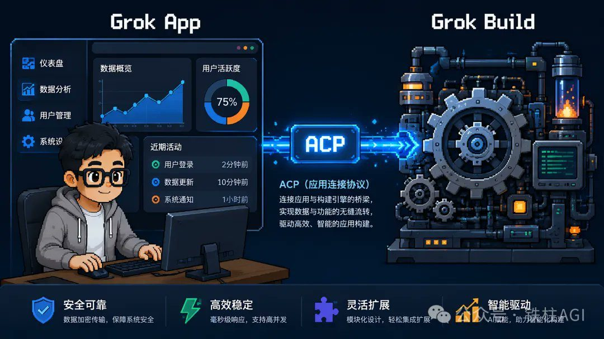
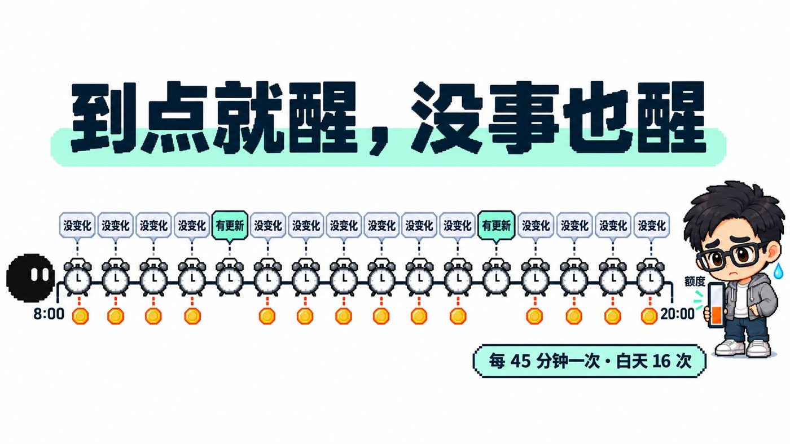
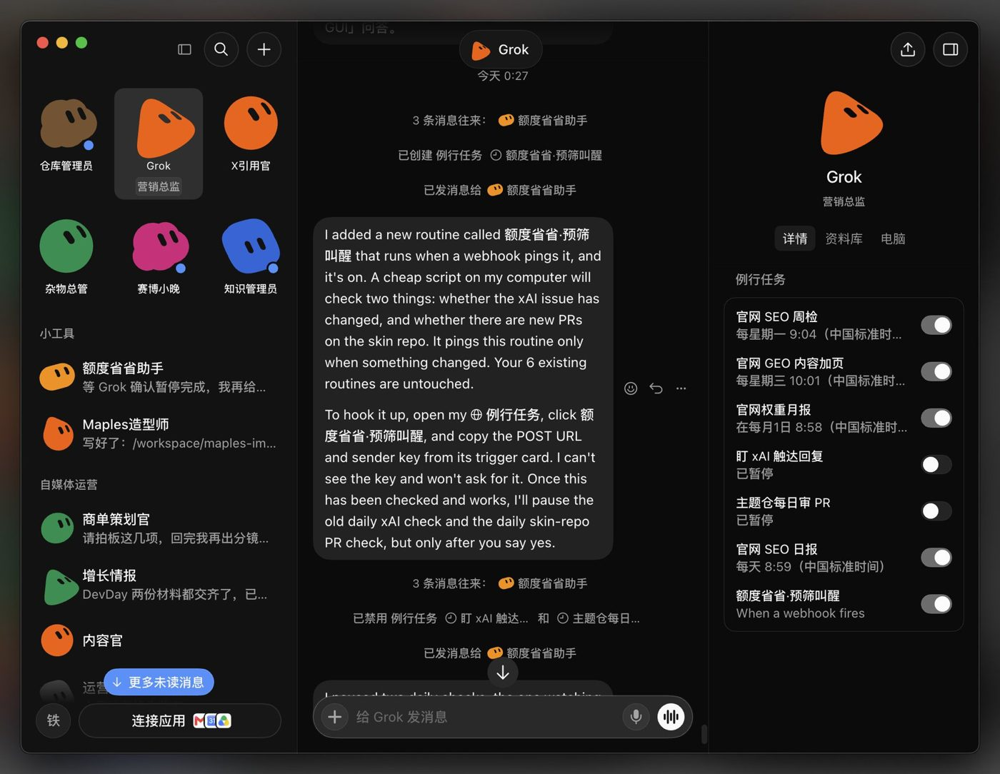
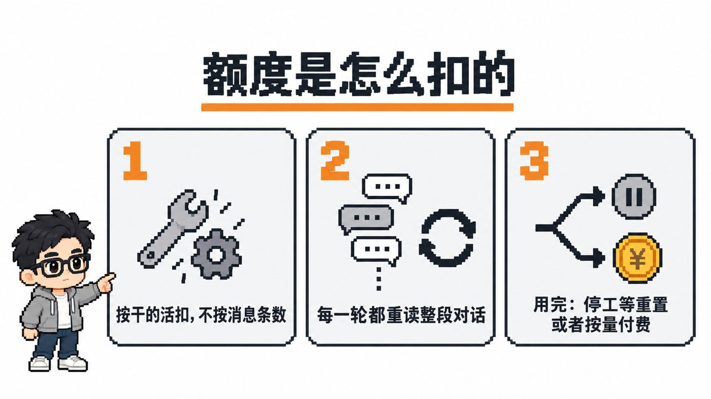
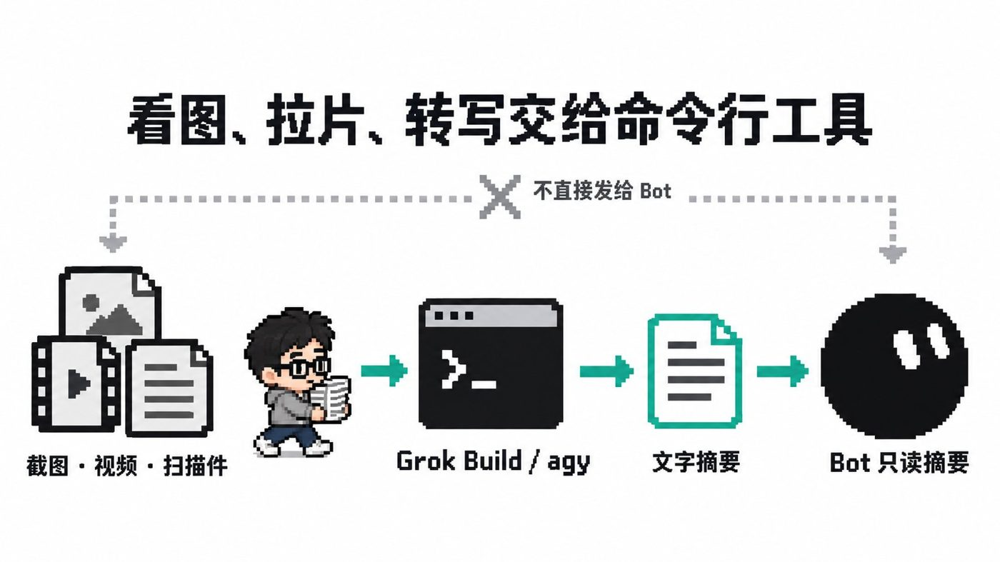
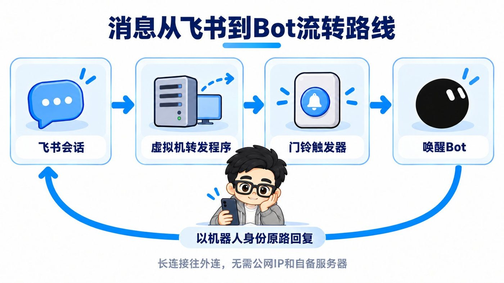
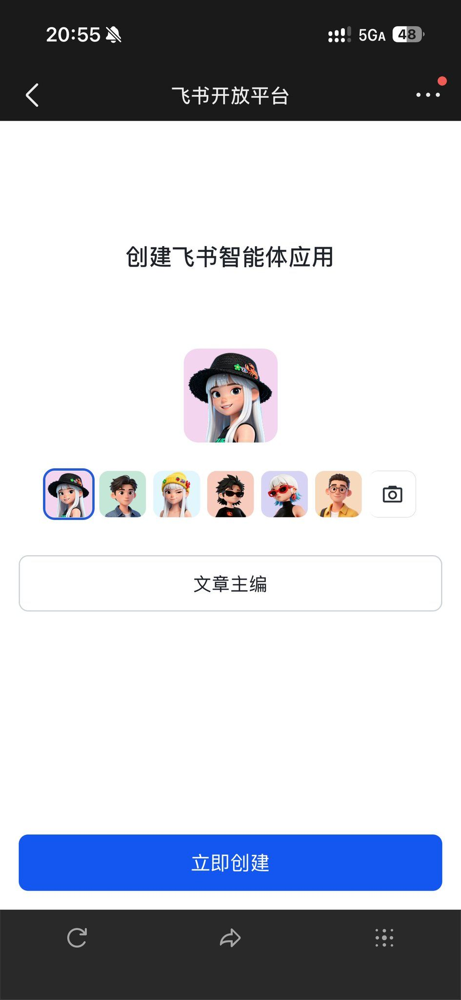
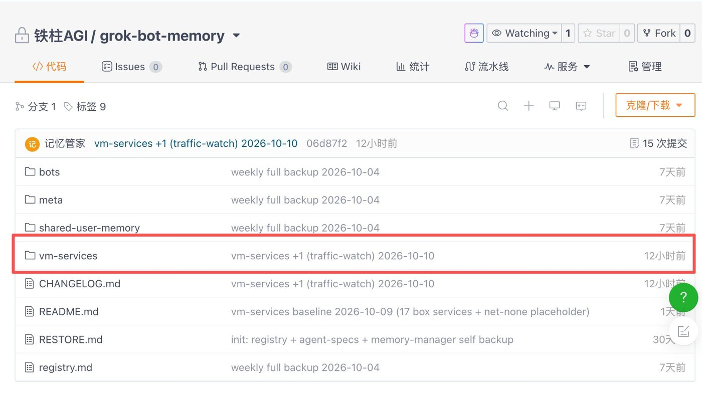

铁柱AGI · 8/60
铁柱的实战长文与推文
跟做 Grok Bot (xAI's AI assistant that comes with its own computer) 最容易踩三个坑。
- 高耗任务全堆给主对话，两三天烧光整周额度 (quota (how much use your plan allows))。
- 云电脑一旦重置，环境工具全丢。
- 多个 Bot 进群循环唤醒，瞬间耗尽用量。
这里收录了铁柱（@cgnot996）的 9 篇实战长文与 4 篇系统推文合集，涵盖订阅额度与外部协同、防灾备份和架构选型四个主题。每篇都附带人工摘要卡与直达链接，方便直接照抄提示词 (prompt (the instruction you give the AI))、脚本与分流方案。
订阅方案与算力额度精打细算
额度机制与分流策略
官方按每周共享池计费。每轮交互都会全量重读历史，直接在主对话贴长文档或长代码会让上下文暴涨，后续每次改动都在重复付费。
主对话只留关键结论与文件路径，长资料存进工作目录，重活分流给后台：
- 写代码交给命令行工具 Grok Build。
- 日常监控交给系统底层定时脚本。
- 图片与音视频解析在命令行出纯文本摘要后再返回。
日常验收看两条指标：
- 每周刷新日前保留 20% 以上用量。
- 关闭按量付费，杜绝后台死循环与轮询空转。
| 档位 | 月费 | 建议与额度 |
|---|---|---|
| Plus | 8 美元/月 | 不含 Bot，仅适合轻量开发 |
| Premium | 30 美元/月 | 开启 Bot 门槛，周额度 4 倍 |
| Super | 100 美元/月 | 高频调度多 Agent (an AI that takes steps on its own to finish a task)，周额度 15 倍 |
| Ultra | 200 美元/月 | 适合专业团队，周额度 50 倍 |
把规则发给主力 Bot 即可生效：
以后长资料、排查日志和中间结果都存成 /workspace/ 下的文件，回我时只给结论和文件路径，不要把原文贴回聊天。给你自己建一个 notes.md 记录角色、正在做的事和做过的决定，每做完一段就更新。面对批量处理或长流程任务，先使用 1 到 2 个最小样本进行单步验证，完成单步后必须暂停等待我确认。大一统 X 订阅解读：新用户怎么选，老订阅要不要切换？一文讲清楚
新方案分 Plus、Premium、Super 和 Ultra 四档。
- 选档：要用 Grok Bot 和云端自动化，起步选每月 30 美元的 Premium 档，普通用户按月开就行。
- 避坑：网页端操作单向不可逆，切换新订阅会永久解绑旧计划。操作前务必核对第三方模型调用频次，防止成本激增。
铁柱推文合集①：开通、套餐与额度
新手防几天烧光额度，记住用量额度高于一切。
- 开通选 30 美元订阅，直接起中文名，Bot 默认就会回中文。
- 推理模型固定选 Grok 4.5。
- 多 Bot 协同只走点对点通信，杜绝常驻群聊，防每条消息多方重读刷爆额度。
三大用量黑洞千万别碰：
- 视频生成
- 高频且无实质产出的定时器
- 多 Bot 群聊
杭州线下活动回看：我是怎么让 Grok Bot 额度更耐用的

想避免周额度提前跑光，要把调度与执行彻底分流。Grok Bot 负责需求拆解与结果验收，写代码等重型工作交给虚拟机里的无头模式 Grok Build 执行。
虚拟机远程登录卡顿，按两步解决。
- 先在本机完成正常登录与授权。
- 再将允许迁移的配置导入虚拟机。
Grok Bot 额度再省一点：定时任务 (scheduled task (a job that runs at set times))极限优化


定时 Routine (a task the bot runs on a schedule or a trigger) 到点频繁空转很耗额度，省钱办法是把检查与判断彻底解耦。
- 把“单纯等变化”的任务从常规 Routine 剥离，只留“到点必交付”。
- 虚拟机内写轻量 Shell 脚本，靠底层 cron 每半小时查一次，只做基础比对，绝不调大模型。
- 检测到实质变动才通过 Webhook (a web address that triggers an action when called) 唤醒 Bot，把常规空转消耗压至零。
Grok Bot 额度超长续航保姆级新手指南（直接发给 Bot！）


Bot 每次对话都全量重读历史，额度两三天就会见底。这 12 条实测规则能直接压住消耗。
- 看图和音视频先在命令行转文字摘要，不直接传多模态。
- 把长资料与排查日志写入文件，对话框只回传简短结论和路径。
- 账户主动关掉按量付费或调低限额，防账单失控。
- 报错重试设 2 次上限，连续失败立刻中断并找人工，掐死死循环空转。
自动化入库与外部协同网络
自动化管道与协同配置
配上 Webhook，Grok Bot 就是 7×24 小时自动化节点。
- Bot 端建例行任务，触发选“当 Webhook 被触发时”，保存后获取接口地址与 Bearer 密钥。
- 手机用快捷指令配“获取 URL 内容”，以 POST 发送 JSON 文字或链接。
- 微信无分享面板就读剪贴板；大附件或多图存临时网盘换公网链接，Bot 云端下载解压。
- 飞书走长连接，免公网 IP 和自建服务器，配门铃触发器定向派活。
验收标准：
- 手机即发即走不用等。
- Bot 云端异步抓取、抽帧转录、落库并给收录回执。
- 群聊仅被精准艾特或全员时响应。
发提示词可自动生成接收端点：
帮我创建一个 Webhook 触发的例行任务。快捷指令会用 POST 请求发来一个 JSON，里面包含一个字段 info。info 可能是我输入的文字，也可能是一个文件下载链接，比如微信聊天记录压缩包、截图、录音。收到后：如果是链接就先下载文件再读取，压缩包先解压；然后整理出要点，收录进知识库，最后给我一份回执，写清楚收录了什么、存在哪里。Grok Bot Webhook + 快捷指令：知识自动入库流水线搭建


适合苹果用户随手归档图文和视频，手机发完即走，云端负责转录、抽帧和整理。
- 在 Grok Bot 建例行任务，拿到专属 Webhook 地址与 Bearer 密钥。
- 手机快捷指令建 POST 请求，把链接或文字打包发送。
- 微信等没有系统分享面板的软件，做个读剪贴板的弹窗指令唤醒收集。
微信聊天记录打通 Grok Bot：快捷指令进阶版


这套方案走“快捷指令 + 临时网盘 + Webhook”链路。
- 微信合并转发记录生成 ZIP，快捷指令自动上传到公网临时存储。
- Webhook 通知 Bot 下载解压，提炼要点入库并回传结构化回执。
收录前必须在微信里手动点开所有图片和文件加载，防止转发空包丢数据。公网跳板顺便抹平了手机和电脑的存储路径差异。
Grok Bot 团队接入飞书保姆级教程（附飞书管家模板）


不用公网 IP 和自备服务器，靠飞书长连接与官方 Python SDK 扫码免配后台，把 3 个 Bot 接进飞书。每个 Bot 设独立门铃触发器，由应用管家维护账本。
- 严格限制仅在艾特自身或全员时转发，避免群内闲聊引发模型空转。
- 关键确认节点直接推送交互卡片，点选按钮即可放行，省去两端界面来回切换的麻烦。
虚拟机防灾与记忆 (memory (facts the bot keeps between chats))资产备份
灾备机制与资产分类
所有 Bot 共享同一 Linux 底座（至强 8 核 8 线程、16GB 内存与 128GB 硬盘，作者自述未核）。不同 Bot 会话独立但底层文件系统打通，官方无原生导出。
| 场景 | 保留 | 丢失与影响 |
|---|---|---|
| 系统更新 | 工作目录与部分凭据 | 抹掉常驻进程、定时任务与全局包 |
| 整机重置 | 无保留 | 系统盘格式化，非持久化数据全丢 |
手动备份不现实，必须把重建逻辑代码化。灾后在新环境跑总入口脚本，通过健康检查恢复运转。
| 资产 | 路径与文件 | 恢复策略与坑点 |
|---|---|---|
| 记忆设定 | 私有Git：agent-spec.md、profile.md、MEMORY.md | 按清单读入新Bot，还原度约80%（作者自述，未核） |
| 常驻服务 | 私有Git vm-services/：REGISTRY.md、registry.json、源码 | 靠restore-*.sh幂等重装并通过健康检查 |
| 访问凭证 | 本地 ~/.agents/secrets/：.env（chmod 600） | 严禁进 Git 或日志，灾后人工按总账填入 |
配给独立运维 Bot 以下提示词，维护服务总账与恢复脚本。
你是「虚拟机服务管家」，负责维护这台机器部署的所有第三方服务。你维护一份登记总账（REGISTRY.md 与 registry.json）、每个服务的独立恢复脚本（restore/restore-<服务>.sh，必须幂等可重复运行）、总入口 restore/restore-all.sh，以及一份排除日志和密钥的自写源码备份 service-src/。总账记录服务 ID、用途、安装方式、启停命令、健康检查命令和密钥存放路径。仓库严禁存入明文密钥。收到恢复指令后，按依赖顺序跑脚本并逐项交出健康检查验收清单。Grok Bot 百万撤离：一套完善的 Agent 系统备份方案
官方没做一键导出记忆。这套方案调用 Bot 读上下文，把人设、决策和任务快照写成 Markdown (a simple way to format text with symbols)，分层推到私有 Git。
- 备份只存纯文本，版本演进交给 Git。
- 仓库必须扫密钥，只记 Token (a small chunk of text; AI usage is counted in tokens) 路径不留明文。
- 新账号重建还原度约 80%，也能直接迁入本地系统。
Grok Bot 虚拟机重置后工具全没了？备份恢复教程（附提示词）

云电脑重置后，把服务重建逻辑代码化最省心。在私有 Git 仓库建 REGISTRY.md 服务总账，收录 20 个项目的依赖、启停命令与无密钥源码，写好幂等恢复脚本。
- 明确区分系统更新与整机重置的丢失边界。
- 按照底层包、CLI 工具到常驻进程的顺序跑恢复脚本。
- 每跑完一步立即做健康检查，遇到故障先跳过并记入清单，杜绝盲目重置。
架构演进、业务实战与生态选型
矩阵分工与选型评估
平时用 Agent 要坚持“一人一岗”。别把写代码、抓数据，连同生活归档与发帖全塞给同一个 Bot，提示词容易冲突，超长上下文也会把模型带偏。
平台选型可以参考铁柱的“品牌整机”与“DIY 组装机”对比：
| 路线 | 代表产品 | 优势 | 适用场景与局限 |
|---|---|---|---|
| 品牌整机 | Grok Bot、Muse | 云电脑开箱即用，免运维远程会话与应用集成 | 受官方周额度与规则限制；适合重度依赖社交分发与云端托管 |
| DIY 组装机 | 本地开源 Hermes、DS Bot | 自由挂载开源模型，无额度限制，数据高度私有 | 需要自己搭系统、调脚本；适合纯代码开发与定制模型微调 |
业务落地要守住安全与自动化底线：
- 机械性的抓取数据和录入表格做到全自动化。
- 涉及公开社交运营或资金变动，必须保留人工确认闸门。
- 发帖必须走官方 API (a way for programs to talk to each other)，严禁在云电脑里用无头浏览器模拟登录，避免账号被封。
岗位分工与避坑参考：
| 业务岗位 | 常驻 Bot | 职责 | 安全边界与避坑配置 |
|---|---|---|---|
| 代码与运维 | 仓库管理员、SEO 监控 | 每日监测项目、自动合并 PR、补全指引 | 检查定时任务日历，避免误设仅工作日执行导致周末停摆 |
| 生活与归档 | 记账管家、知识库收录 | 接收快捷指令推送的图文，录入多维表格 | 临时图床设置高强度随机 ID，敏感隐私不走公网跳板 |
| 协作与调度 | 文章主编、虚拟机管家 | 拆解选题、协调各 Bot、管理后台总账 | 外部工具采用设备代码（Device Code）授权，防止两台机器互相顶掉登录态 |
铁柱推文合集②：产品功能与版本观察
作者：铁柱AGI（推文合集）｜适合谁读：关注底层环境机制、想掌握多端联动与网络排错的技术探索者
合集记录了 Grok Bot 的底层演进。同一账号下的所有 Bot 共享同一台 Linux 云电脑，配置是 8 核 16G 内存配 128G 硬盘，各桌面会话相互独立。文中还记录了专属邮箱申领、调用原生 X 搜索与排查出口网络的方法。
环境排障重点记住两点：
- Webhook 面板点击没反应时，直接发指令让 Bot 回复直达链接。
- 核心环境配置与自定义脚本必须收敛到持久化路径，避免系统底层更替带来损耗。
铁柱推文合集③：实战玩法与案例
作者：铁柱AGI（推文合集）｜适合谁读：找业务落地灵感、想避开自动化封号和死循环的实践者
铁柱记录了十余个真实运行的 Bot 岗位，包括仓库巡检与 SEO 日报，也涵盖微信抓取、多维表格记账及拼图接口调用，并给出了从单岗配置到持久化灾备的四步实施法则。
平稳运行必须遵守两项运维规范：
- 发布内容必须走官方 API，严禁在虚拟机内用无头浏览器模拟发帖，防止账号受限。
- 外部命令行工具统一用设备代码（Device Code）授权，防止两台机器争夺凭证导致掉线。
铁柱推文合集④：社区、生态与竞品对照
作者：铁柱AGI（推文合集）｜适合谁读：在多个 Agent 框架间权衡、评估选型与找开源资源的架构师
铁柱横向对比了主流 Agent 框架与 Grok Bot。Grok Bot 属于整机路线，自带云电脑开箱即用但受额度限制；Hermes 等组装机高度可控，需要自己运维。
文里也总结了 awesome-grok-bot 仓库靠 Bot 自主巡检收录活动与文档的经验。
团队扩充认知有个实用技巧：直接把优质开源框架和外部教程当成上下文发给 Bot 学习，让 Agent 紧贴自身工作流 (workflow (a chain of steps done in order))。